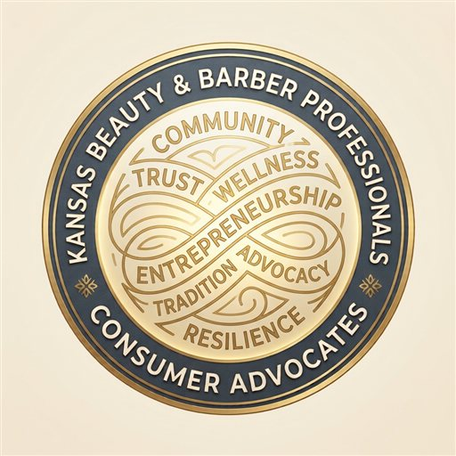

Protect & Strengthen Training Hours
Retain or expand the 1,500-hour cosmetology curriculum and raise Kansas’s 350-hour manicuring requirement so every graduate is fully prepared in sanitation, chemical safety, and hands-on skills.

Kansas Beauty & BarberKansas consumer advocacy
Building on our core mission to protect Kansas consumers and uphold professional standards, BBPCA is advancing the following priorities for the 2027 legislative session:
Retain or expand the 1,500-hour cosmetology curriculum and raise Kansas’s 350-hour manicuring requirement so every graduate is fully prepared in sanitation, chemical safety, and hands-on skills.
Oppose efforts to strip eyelash extensions, temporary hair removal (waxing, sugaring, and threading), extensions, weaving, locking, twisting, and braiding out of professional oversight without safety standards, training, or facility inspections.
Update K.S.A. 65-1928 so exempt hair braiders and threaders must formally submit their completed KDHE infection control self-test to the state rather than simply keeping it on file.
Establish a basic state tracking list for unlicensed braiding and threading businesses so public health officials know where commercial services are being offered.
Create a formal reporting link between county health departments, KDHE, and state licensing boards to track infections and injuries linked to both licensed and unlicensed beauty services.
Restore a balanced occupational licensing process that benefits from professional expertise, agency knowledge, and public input.
Require clear disclosure when a beauty, barbering, body art, or personal care service is not licensed or regulated by the State of Kansas so consumers can make informed decisions.
Provide fair and meaningful representation of licensed professionals on the Kansas Board of Cosmetology, with representation proportionate to the number of licensees in each profession.
Create separate boards for body art and tanning, with representation focused on the needs and standards of each profession.